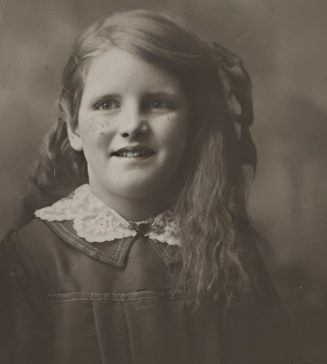

Helen M Hitchcock (née Manby) 1911 - c2006
[ Home ] | [ Calendar ] | [ Surnames Index ] | [ Family History ]Helen Manby, the wife of Alfred James Hitchcock (the third cousin once-removed on the father's side of Nigel Horne), was born in West Ham, London, England on May 8, 19111,2,3 and married Alfred (a textile warehouseman with whom she had 1 child, Gerald Anthony, ) in West Ham, Essex, England around Nov 19354. On Sep 29, 1939, she lived at 20 Hillfoot Road, Romford, London, England1.
She died c. Nov 2006 in Rochford, Essex, England3.
Children
- Gerald Anthony was born on Mar 23, 1939
Citations
- 1939 Register - Findmypast (was the wife of the head of the household)
- England & Wales births 1837-2006 - Findmypast
- England & Wales deaths 1837-2007 - Findmypast
- England & Wales Marriages 1837-2005 - Findmypast
Media
Helen Manby

England & Wales births 1837-2006 - BMD/B/1911/2/AZ/000888/119
England & Wales deaths 1837-2007 - BMD/D/2006/11/87143085
Family Tree

Generated by ged2site. Last updated on Nov 13, 2024